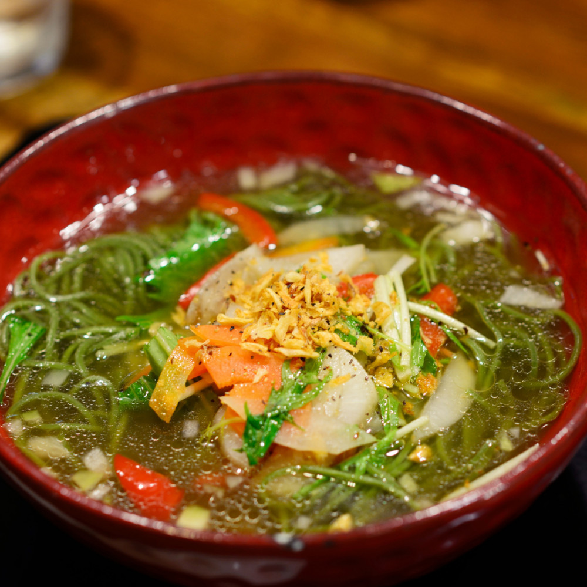

Vegan Noodles

Light soup and chewy noodles, very good.
Ingredients
- Garlic cloves: 2
- White miso paste: ½ tablespoon
- Rapeseed oil: 1 tablespoon
- Neri Goma (white sesame paste) or tahini: 1 tablespoon
- Good-quality vegan stock: 1
- Soy sauce: 2 tablespoon
- Firm tofu, cut into chunky cubes: 200g
- Cornflour: 1 tablespoon
- Veg or sunflower oil: 1 tablespoon
- Ramen or rice noodles: 100g
- 1 Head pak choi
- Finely sliced spring onions: 2(white and green parts kept separate)
- Ready-to-eat beansprouts: 25g
- Peeled and cut into fine matchsticks: 1
- Sesame oil, sriracha, chopped coriander, crushed peanuts,
Crumbled sheets of nori or dried chilli threads (silgochu), to serve
Instructions
- Ramen can be a great dinner item for you and your kids. Crush the garlic with the back of a large knife, then combine it with the ginger, miso, Neri Goma, mushrooms, stock, and soy in a pot.
- Bring to a low boil, then reduce to low heat and cook for 5 minutes, or until the ginger is soft. Strain into a clean pan, tossing off everything that remains in the filter.
- Cook the tofu in the meantime. Toss it in the cornflour and heat the oil in a frying pan. Fry for a few minutes on each side, turning it carefully not to fall apart.
To keep the noodles al dente, cook them for 1 minute less than the package directions. Drain and set aside in a pan with some water to keep them from sticking together.
- Reheat the pak choi and spring onion whites in the broth for 1-2 minutes or until the greens have barely wilted.
- In two deep bowls, ladle the broth and vegetables over the noodles. To serve, add tofu, beansprouts, carrot and ginger matchsticks, green portions of spring onions, a drizzle of sesame oil, and any other toppings.